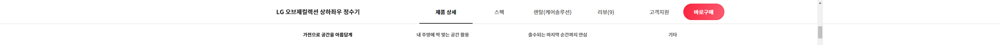
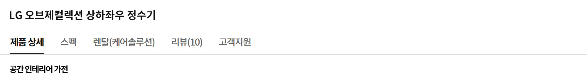

뉴트럴 디자인
공간에 스며드는 컬러
어떤 취향, 어떤 인테리어에서든 소품처럼
녹아드는 뉴트럴 디자인은 우아한 컬러로
주방의 분위기를 감각적으로 변화시킵니다
국내 최초 상하좌우 무빙 출수탭
당신의 주방에서
아름답고 자유롭게
집마다 주방의 크기와 구조가 다르기에,
상하좌우 자유로운 무빙 출수탭으로
공간의 실용성과 활용성과 동시에 높였습니다
컵이나 냄비에 따라 높낮이도 자동 조절돼
뜨거운 물을 받을 때도 안전합니다 1
고온 살균 & 스테인리스 직수관
세균 걱정 남김없이
99.99% 강력 살균
위생에 특화된 스테인리스 직수관은 물론
필터와 직수관, 출수구까지 고온살균으로
청결함을 유지해주니 마실 때나 요리할 때도
안심하고 바로 사용할 수 있어요 2
필터와 직수관, 출수구까지 고온살균으로
청결함을 유지해주니 마실 때나 요리할 때도
안심하고 바로 사용할 수 있어요 2


-


자동살균, 수동살균, 안심살균
99.99% UVnano 안심살균
한 시간에 한 번씩
한 시간에 한 번씩
매일매일
외부에 노출된 코크는 물이 직접 닿는 곳인
만큼 그 어느 곳보다 세심한 관리가 필수죠
상하좌우 정수기는 UV-LED로 24시간 청결을
유지해 언제든 마음 놓고 마실 수 있어요 3
만큼 그 어느 곳보다 세심한 관리가 필수죠
상하좌우 정수기는 UV-LED로 24시간 청결을
유지해 언제든 마음 놓고 마실 수 있어요 3
4단계 올 퓨리 필터 시스템
엄격하게 정수된
엄격하게 정수된
급이 다른 수질
새롭게 업그레이드된 4단계 필터 시스템은
물속 건강한 미네랄은 그대로 유지하면서
차원이 다른 정수 능력을 발휘합니다
덕분에 이유식, 분유에도 안심하고 쓸 수 있죠 4
물속 건강한 미네랄은 그대로 유지하면서
차원이 다른 정수 능력을 발휘합니다
덕분에 이유식, 분유에도 안심하고 쓸 수 있죠 4
음성 안내
알아서 척척 알려주는
알아서 척척 알려주는
똑똑한 목소리
필터 교체는 언제 해야 하는지, 살균 과정은
어떻게 진행되고 있는지 똑똑한 음성 안내가
때에 맞춰 다정하게 알려드려요
어떻게 진행되고 있는지 똑똑한 음성 안내가
때에 맞춰 다정하게 알려드려요
초간편 터치 디스플레이
셀프 케어도 물 조절도
셀프 케어도 물 조절도
버튼 하나로 끝
누구나 스스로 쉽게 관리할 수 있도록
필요한 기능을 보기 쉽게 담았습니다
출수구, 직수관 살균은 버튼 하나로 바로,
출수 용량도 디테일하게 조절할 수 있죠
필요한 기능을 보기 쉽게 담았습니다
출수구, 직수관 살균은 버튼 하나로 바로,
출수 용량도 디테일하게 조절할 수 있죠
LG ThinQ
한눈에 보고 관리하는
한눈에 보고 관리하는
스마트한 정수기 생활
평소 물 사용 습관은 물론 자동 살균 설정,
살균 이력 관리까지 LG ThinQ 앱 하나로
한눈에 체크하고 편하게 관리하세요 5
살균 이력 관리까지 LG ThinQ 앱 하나로
한눈에 체크하고 편하게 관리하세요 5
자가관리/방문관리
생활맞춤 케어 서비스
평소 라이프 스타일에 맞춰 원하는 케어 서비스를
선택해 보세요
전문가가 시기별로 척척 챙겨주는
방문관리는 물론 혼자서도 손쉽게 관리할 수 있죠
관리방법 관리항목 |
자가관리 | 방문관리 |
|---|---|---|
| 방문주기 | - | 1회/3개월 |
| 필터교체 | 정기 배송 | 매니저 방문관리 |
| 출수구 살균 | 수동 | 수동 + 매니저 방문관리 |
| 직수관 살균 | 주 1회 자동 + 수동 | 주 1회 자동 + 수동 |
| 토탈클리닝 | - | 매니저 방문관리 |
-
1.국내 최초 상하좌우 무빙 출수탭
- 국내최초는 국내 판매 중인 정수기에 대한 상/하/좌/우 출수탭 도입기준 (2019.09)
- 30g 미만의 가벼운 컵은 높이 감지 중 넘어질 수 있습니다.
- 컵의 높이가 출수탭보다 낮은 경우 (13cm 미만) 높이 감지가 되지 않습니다.
-
2.고온 살균 & 스테인리스 직수관
- 직수관/출수구 살균 살균력 99.99%는 당사 제시 방법에 따른 한국건설생활환경연구원과 한국화학융합시험연구원, KOTITI시험연구원의 시험결과이며, 실사용 환경에 따라 달라질 수 있습니다. (2021.05)
- 시험균 : 대장균, 황색포도상구균, 녹농균
- 시험 방법
- 1) 부유균 : 25℃ 조건에서 정수기 내부 유로를 과량의 시험균 조제수를 흘려 오염시킨 후 살균기능을 동작하여 살균기능 동작 전·후의 세균 감소 정도를 비교함
- 2) 부착균 : 25℃ 조건에서 정수기 내부 유로에 5~7일 이상 시험균을 부착 오염시켜 세균막을 형성한 후 살균기능을 동작하여 살균기능 전·후의 세균 감소 정도를 비교함
- 직수관 살균은 매주 온수, 정수, 냉수가 흐르는 관을 고온으로 살균하게 되며 4주에 한 번씩 냉수 탱크 관을 포함하여 살균하게 됩니다.
- 직수관 살균 중 제품에 이상이 발생할 경우, 기능이 정상적으로 작동하지 않을 수 있습니다.
-
3.99.99% UVnano 안심살균
- UVnano는 UV(자외선)와 nanometer(길이단위)의 합성어입니다.
- 99.99%의 코크 살균력은 상온에서 정수기 출수부에 균을 접종하여 UVnano 코크 자동 살균 기능 가동 24시간 후 생균수를 측정하여 계산하였습니다.1)
- 본 시험 결과는 자사에서 제안한 시험 방법에 따라 2개의 기관으로부터 취득하였으며 실사용 환경에 따라 다를 수 있습니다.
- 시험 기관2) : 한국건설생활환경시험연구원(21.2), 한국화학융합시험연구원(21.3)
- 시험균 : 대장균, 황색포도상구균, 녹농균(살균 성능 평가 대표 지표균 및 먹는 물 수질 기준 평가 항목 균 중 3종을 선정하여 진행)
- 1) WD*03A* 모델 5월 생산분부터 적용 / WD*02A* 모델 6월 생산분부터 적용
- 2) 6/4 생산분부터 적용
-
4.4단계 올 퓨리 필터 시스템
- 먹는물관리법 제21조 제5항 및 같은 법 시행규칙 제10조 제10항에 따른 물기술인증원에서 발급한 품질검사성적서에 근거한 내용이며, 실제 사용환경에 따라 차이가 있을 수 있습니다.
- 중금속 : 수은, 납, 철, 알루미늄, 구리, 비소, 카드뮴, 아연, 망간 기준치 이상 제거
- 유기화학물질 19종, 농약류 4종, 미생물 1종, 의무정수성능 항목 4종 기준치 이상 제거
- 미네랄 세이브 필터(2단계)의 기공크기는 0.1~0.3㎛로 해당 크기 이상의 미세 입자 및 박테리아 제거가 가능하며 동시에 해당 크기 이하의 물 속 이온성 미네랄을 제거하지 않고 통과시킵니다.
- 노로바이러스 99.99% 제거는 당사 제시 방법에 따른 ㈜노로젠(2020.07)의 제한된 조건에서 측정된 시험결과이며, 실제 사용환경에 따라 차이가 있을 수 있습니다.
(필터에 유량 2.0LPM으로 3,600L를 통수한 시점에 농도 1.0x10^4PFU/㎖ 이상의 노로바이러스 0.6L를 유량 1.0LPM으로 통과하여 통과한 물의 노로바이러스 양을 측정)
-
5.LG ThinQ
- Wi-fi 적용 모델에 한함
- 앱 설치에 관한 자세한 설명은 제품 사용설명서의 스마트 기능 사용하기를 참조해주세요.
- LG ThinQ앱은 일부 스마트폰에서는 기능 사용에 제약이 발생하거나 작동하지 않을 수 있으니, 최소 사양을 확인 후 사용하세요. (Android OS 5.0 이상, iOS 10.0 이상)
하단 컨텐츠